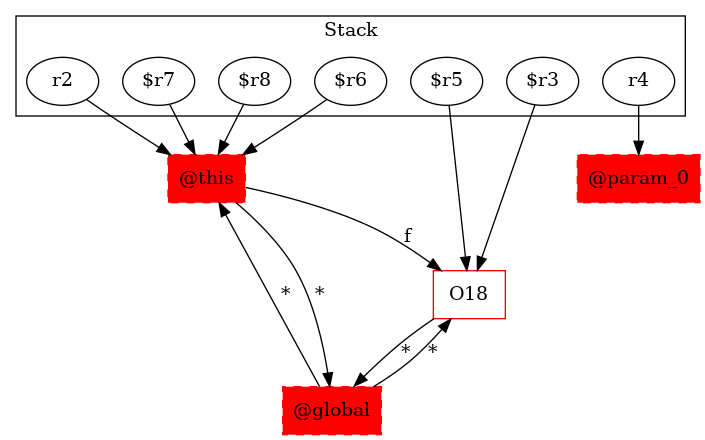

-1 : r2 := @this: Test3
-1 : r4 := @parameter0: testcase.Test3
18 : $r5 = new testcase.Test3
18 : specialinvoke $r5.|testcase.Test3: void |init|()|()
-1 : $r6 = (testcase.Test3) r2
19 : $r6.|testcase.Test3: testcase.Test3 f| = $r5
-1 : $r7 = (testcase.Test3) r2
20 : $r3 = $r7.|testcase.Test3: testcase.Test3 f|
-1 : $r8 = (testcase.Test3) r2
20 : virtualinvoke $r8.|testcase.Test3: void test3_1(testcase.Test3)|($r3) -> class soot.jimple.internal.JInvokeStmt
21 : return
